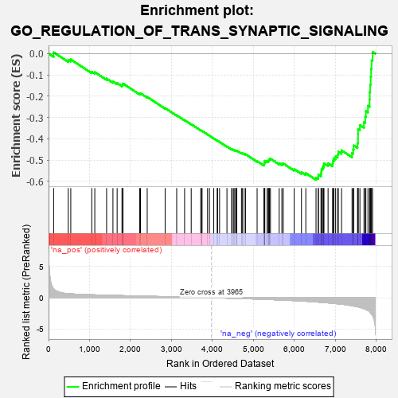
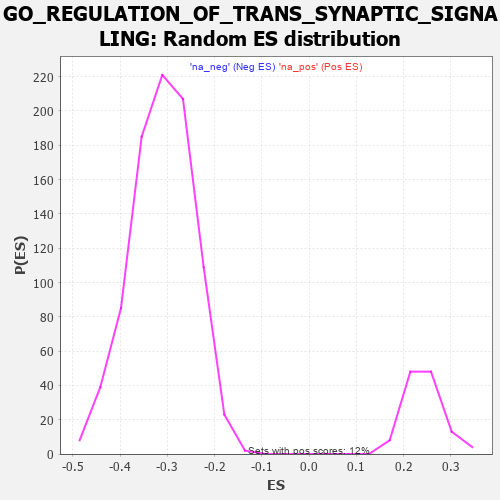

| | | Dataset | 7d |
| Phenotype | NoPhenotypeAvailable |
| Upregulated in class | na_neg |
| GeneSet | GO_REGULATION_OF_TRANS_SYNAPTIC_SIGNALING |
| Enrichment Score (ES) | -0.5924187 |
| Normalized Enrichment Score (NES) | -1.9021964 |
| Nominal p-value | 0.0 |
| FDR q-value | 0.005909081 |
| FWER p-Value | 0.068 |
Table: GSEA Results Summary

Fig 1: Enrichment plot: GO_REGULATION_OF_TRANS_SYNAPTIC_SIGNALING
Profile of the Running ES Score & Positions of GeneSet Members on the Rank Ordered List
| PROBE | GENE SYMBOL | GENE_TITLE | RANK IN GENE LIST | RANK METRIC SCORE | RUNNING ES | CORE ENRICHMENT | | 1 | ADCY8 | | | 124 | 1.418 | 0.0061 | No |
| 2 | CDC20 | | | 480 | 0.644 | -0.0291 | No |
| 3 | SRF | | | 542 | 0.615 | -0.0274 | No |
| 4 | MEF2C | | | 1054 | 0.473 | -0.0850 | No |
| 5 | SRC | | | 1128 | 0.459 | -0.0872 | No |
| 6 | P2RY1 | | | 1416 | 0.407 | -0.1174 | No |
| 7 | CNTN4 | | | 1571 | 0.379 | -0.1311 | No |
| 8 | BACE1 | | | 1673 | 0.360 | -0.1384 | No |
| 9 | GRM8 | | | 1791 | 0.339 | -0.1480 | No |
| 10 | ABR | | | 1812 | 0.335 | -0.1454 | No |
| 11 | FMR1 | | | 1816 | 0.334 | -0.1407 | No |
| 12 | GRIK3 | | | 2224 | 0.272 | -0.1882 | No |
| 13 | CREB1 | | | 2243 | 0.269 | -0.1863 | No |
| 14 | BTBD9 | | | 2407 | 0.245 | -0.2032 | No |
| 15 | NR2E1 | | | 2844 | 0.177 | -0.2559 | No |
| 16 | MTMR2 | | | 3126 | 0.133 | -0.2895 | No |
| 17 | RAB8A | | | 3319 | 0.102 | -0.3123 | No |
| 18 | CDK5 | | | 3480 | 0.080 | -0.3314 | No |
| 19 | NF1 | | | 3713 | 0.040 | -0.3602 | No |
| 20 | SYT11 | | | 3732 | 0.036 | -0.3619 | No |
| 21 | HTR1B | | | 3745 | 0.035 | -0.3629 | No |
| 22 | DGKZ | | | 3879 | 0.015 | -0.3796 | No |
| 23 | NRG3 | | | 3925 | 0.005 | -0.3852 | No |
| 24 | TOR1A | | | 4030 | -0.013 | -0.3982 | No |
| 25 | MTOR | | | 4114 | -0.025 | -0.4084 | No |
| 26 | ABL1 | | | 4125 | -0.027 | -0.4092 | No |
| 27 | SYT12 | | | 4172 | -0.037 | -0.4145 | No |
| 28 | ADRB2 | | | 4352 | -0.068 | -0.4362 | No |
| 29 | LRRK2 | | | 4467 | -0.087 | -0.4493 | No |
| 30 | JPH3 | | | 4481 | -0.091 | -0.4495 | No |
| 31 | NPTN | | | 4519 | -0.098 | -0.4527 | No |
| 32 | NTRK2 | | | 4543 | -0.104 | -0.4540 | No |
| 33 | NISCH | | | 4568 | -0.109 | -0.4554 | No |
| 34 | SYT4 | | | 4590 | -0.116 | -0.4563 | No |
| 35 | PNKD | | | 4591 | -0.116 | -0.4545 | No |
| 36 | RAP1B | | | 4706 | -0.140 | -0.4668 | No |
| 37 | PXK | | | 4726 | -0.144 | -0.4670 | No |
| 38 | PLCG1 | | | 4770 | -0.151 | -0.4702 | No |
| 39 | PLCL2 | | | 4807 | -0.159 | -0.4723 | No |
| 40 | DRD2 | | | 5088 | -0.221 | -0.5044 | No |
| 41 | SSH1 | | | 5254 | -0.258 | -0.5214 | No |
| 42 | PTEN | | | 5262 | -0.261 | -0.5183 | No |
| 43 | PICK1 | | | 5265 | -0.263 | -0.5145 | No |
| 44 | RIMS2 | | | 5272 | -0.265 | -0.5112 | No |
| 45 | EPHA4 | | | 5273 | -0.265 | -0.5071 | No |
| 46 | CELF4 | | | 5275 | -0.266 | -0.5031 | No |
| 47 | NPY2R | | | 5331 | -0.281 | -0.5058 | No |
| 48 | ITPR3 | | | 5361 | -0.288 | -0.5051 | No |
| 49 | MPP2 | | | 5367 | -0.288 | -0.5013 | No |
| 50 | GRIN1 | | | 5381 | -0.291 | -0.4985 | No |
| 51 | DLG4 | | | 5388 | -0.293 | -0.4947 | No |
| 52 | KCNC4 | | | 5414 | -0.298 | -0.4933 | No |
| 53 | ROR2 | | | 5626 | -0.353 | -0.5147 | No |
| 54 | LRRC4 | | | 5692 | -0.371 | -0.5172 | No |
| 55 | DGKI | | | 5725 | -0.384 | -0.5154 | No |
| 56 | SYT9 | | | 5992 | -0.469 | -0.5419 | No |
| 57 | GRID2 | | | 6170 | -0.528 | -0.5563 | No |
| 58 | FLOT1 | | | 6276 | -0.564 | -0.5609 | No |
| 59 | VAMP2 | | | 6525 | -0.672 | -0.5821 | Yes |
| 60 | CLN3 | | | 6580 | -0.699 | -0.5782 | Yes |
| 61 | ARF1 | | | 6583 | -0.701 | -0.5677 | Yes |
| 62 | PTPRS | | | 6646 | -0.738 | -0.5642 | Yes |
| 63 | RAB5A | | | 6655 | -0.741 | -0.5538 | Yes |
| 64 | VPS18 | | | 6659 | -0.743 | -0.5428 | Yes |
| 65 | CPLX1 | | | 6684 | -0.753 | -0.5342 | Yes |
| 66 | EGFR | | | 6708 | -0.765 | -0.5254 | Yes |
| 67 | GSK3B | | | 6719 | -0.768 | -0.5149 | Yes |
| 68 | GIPC1 | | | 6819 | -0.826 | -0.5147 | Yes |
| 69 | LRP8 | | | 6931 | -0.889 | -0.5151 | Yes |
| 70 | GHSR | | | 6937 | -0.894 | -0.5020 | Yes |
| 71 | DNM1L | | | 6963 | -0.913 | -0.4912 | Yes |
| 72 | CCR2 | | | 7003 | -0.939 | -0.4817 | Yes |
| 73 | GRM5 | | | 7053 | -0.969 | -0.4730 | Yes |
| 74 | PLCB4 | | | 7069 | -0.977 | -0.4599 | Yes |
| 75 | SYT1 | | | 7148 | -1.033 | -0.4539 | Yes |
| 76 | GRM1 | | | 7404 | -1.272 | -0.4668 | Yes |
| 77 | KMO | | | 7432 | -1.308 | -0.4501 | Yes |
| 78 | KCNB1 | | | 7444 | -1.327 | -0.4311 | Yes |
| 79 | GRIK1 | | | 7538 | -1.454 | -0.4205 | Yes |
| 80 | LAMA2 | | | 7549 | -1.468 | -0.3992 | Yes |
| 81 | DCC | | | 7550 | -1.470 | -0.3767 | Yes |
| 82 | GRIK2 | | | 7552 | -1.471 | -0.3542 | Yes |
| 83 | GRM2 | | | 7596 | -1.547 | -0.3358 | Yes |
| 84 | ADCY1 | | | 7695 | -1.752 | -0.3214 | Yes |
| 85 | ASIC1 | | | 7726 | -1.838 | -0.2969 | Yes |
| 86 | GRM3 | | | 7741 | -1.880 | -0.2698 | Yes |
| 87 | GRIK5 | | | 7792 | -2.044 | -0.2447 | Yes |
| 88 | GRIK4 | | | 7832 | -2.234 | -0.2153 | Yes |
| 89 | GRIA1 | | | 7836 | -2.260 | -0.1810 | Yes |
| 90 | GRM4 | | | 7847 | -2.393 | -0.1455 | Yes |
| 91 | GRID1 | | | 7858 | -2.465 | -0.1088 | Yes |
| 92 | CALM3 | | | 7869 | -2.525 | -0.0713 | Yes |
| 93 | FYN | | | 7881 | -2.622 | -0.0324 | Yes |
| 94 | PLCB1 | | | 7904 | -2.841 | 0.0085 | Yes |
Table: GSEA details [plain text format]

Fig 2: GO_REGULATION_OF_TRANS_SYNAPTIC_SIGNALING: Random ES distribution
Gene set null distribution of ES for GO_REGULATION_OF_TRANS_SYNAPTIC_SIGNALING